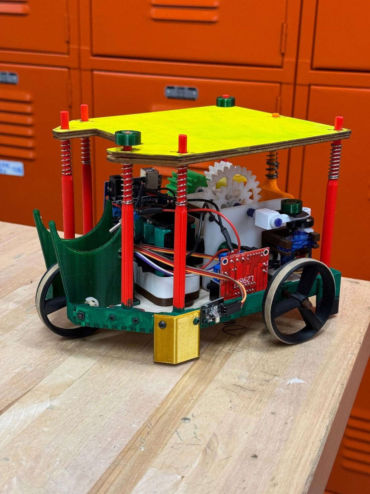

03 / ME 371 · ENGINEERING DESIGN
Built to take
the impact.
A vehicle designed for speed, load testing, and repeated traversals. I also got to drive it.

MY CONTRIBUTION
Design and assembly.
I led the mounting of the electronic components and designed the mounting for the Scotch yoke mechanism. I also designed smaller plastic parts, including shaft collars.
I led the impact analysis calculations and FEA for the roof and spring-supported structure.
IMPACT ANALYSIS
Calculations versus FEA.
For Benchmark 4, the impact calculations predicted about 51 mm of deflection. The Fusion 360 FEA showed approximately 59 mm of displacement.
At the time of the FEA, the roof was supported by four springs. After reviewing the FEA results and testing the car, we added more springs to reduce displacement and posts beneath the chassis to reduce chassis deflection.
We tested the vehicle during the final demo, including the drop and load requirements.

THE DEMO
All criteria passed.
Above the required 1.25 m/s.
1 kg lift and 3 kg drop test.
Against a minimum of 3 traversals. We broke the course record.
THE FOOTAGE